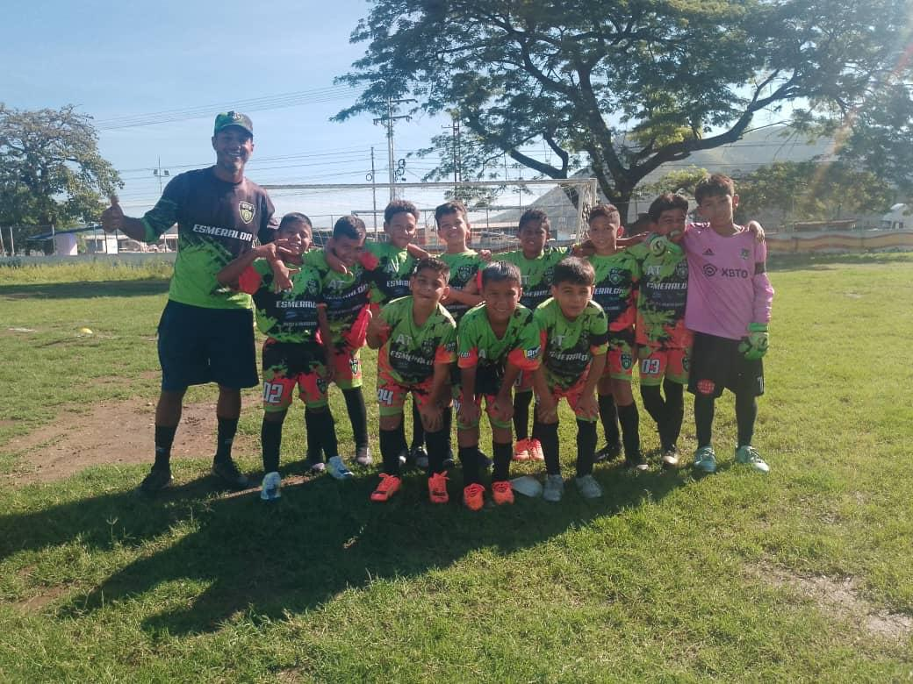
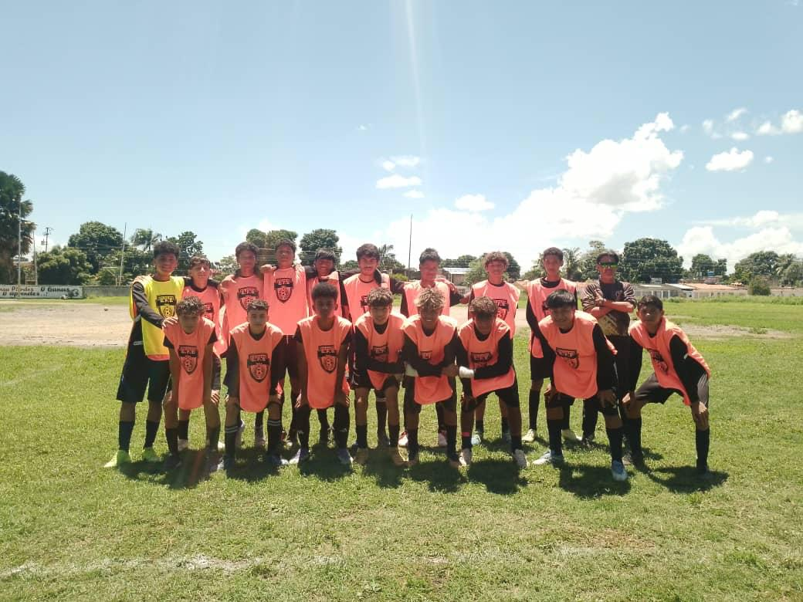

Programa Formativo (Sub-10 y Sub-12)
Dirigido a jugadores de 8 a 11 años. Profundizamos en el pase, control orientado, conducción y posicionamiento básico en el terreno de juego, fortaleciendo el compañerismo y la inteligencia táctica.

Programa Competitivo (Sub-14 y Sub-16)
Orientado a jóvenes de 12 a 15 años. Perfeccionamos la preparación física, táctica avanzada de sistemas de juego y mentalidad competitiva para torneos regionales y nacionales.
